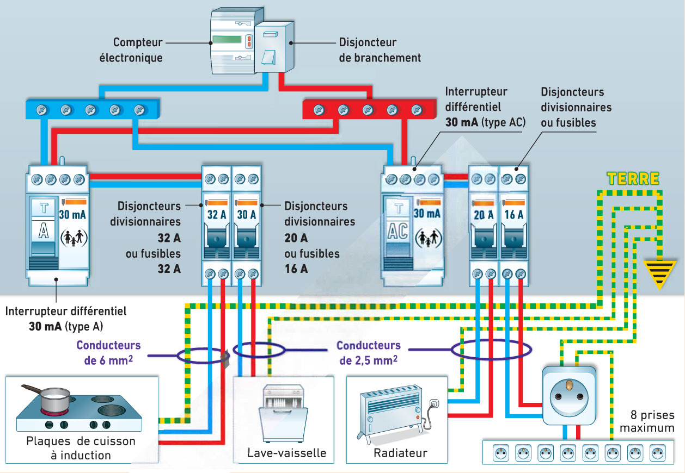

CAP Électricien · 1re année
Le disjoncteur protège les fils, le différentiel protège les personnes. Un facteur cinq cents sépare leurs seuils.
4 exercices · 2 figures
Savoirs travaillés

Le disjoncteur protège l’installation, contre la surintensité : trop d’appareils sur un départ, et il coupe. Le différentiel protège les personnes, contre le défaut d’isolement : du courant part à la terre, et il coupe.
Les deux appareils coupent le courant, mais ils ne surveillent pas la même chose. Le disjoncteur compte ce qui passe dans le fil, et coupe au-delà de son calibre — 16 A, par exemple. Il protège l’installation.
Le différentiel, lui, compare ce qui part et ce qui revient. Si la différence dépasse 30 mA, c’est qu’une partie du courant s’en va ailleurs — souvent par quelqu’un. Il protège les personnes.
16 A et 30 mA, ce n’est pas la même unité. 30 mA valent 0,03 A : le différentiel réagit à un courant cinq cents fois plus petit que celui qui fait sauter le disjoncteur. Comparer les deux nombres bruts n’a aucun sens.
Exercice · CN
Le différentiel porte 30 mA. Combien cela fait-il en ampères ?
Exercice · CN
Le disjoncteur des prises est calibré à 16 A. Combien de fois le seuil du différentiel est-il plus petit que celui-là ? Arrondissez à l’unité.
Attendre du disjoncteur qu’il vous protège. Il faut 16 A pour le faire déclencher, soit cinq cents fois le courant qui tue. Une personne est morte bien avant.
Exercice · AU
Un corps sec traversé sous 230 V laisse passer 23 mA. Le différentiel de 30 mA déclenche-t-il ? Répondez par oui ou non.
Exercice · AU
23 mA ne font pas déclencher le différentiel. En deux phrases, dites pourquoi ce résultat n’a rien de rassurant, en vous servant de la courbe de sécurité.
La phrase à retenir mot pour mot : le disjoncteur protège les fils, le différentiel protège les personnes. Aucun des deux ne remplace la consignation.
Ce site rappelle la méthode. Aucun corrigé, rien n'est noté.